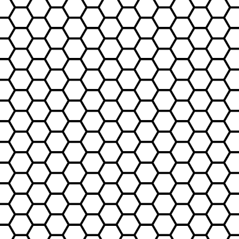
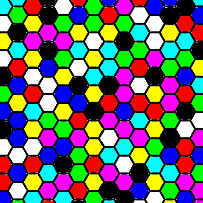
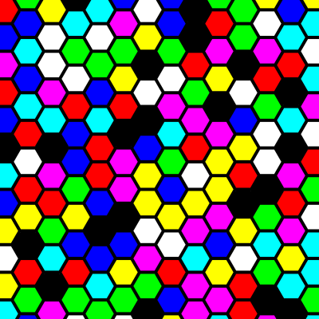
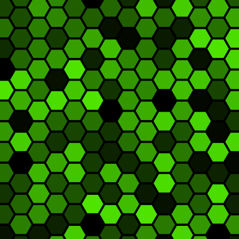

This script fills multiple areas on the target “drawable” (layer, mask, channel using random colors. The areas are designated using a path or the selection.
Remarks:
Colors from: the source of the colors. It can be:
Gradient: as many colors as indicated in the Maximum colors are linearly sampled on the gradient.
If there are fewer areas to fill than colors the colors used will be picked at random among these.Palette: colors are taken from the active palette up to Maximum colors.
If there are more colors than Maximum colors in the palette, the colors are picked at random
(in other words, these will not be the first Maximum colors ones).Foreground/Background: the current foreground and background colors are usedCells from: the origin of the cells. It can be:
Path: the script uses the strokes from the active path directlySelection: the scripts creates a path from he current selectionMaximum colors: the maximum number of colors to use. If there are more colors than areas, the number of areas is used.Bleed: an amount by which the selection is “grown” before doing the bucket fill.
This is usually necessary to produce a minimum of overlap with anti-aliased pixels on the edges of the selection.
One pixel is often enough but in some cases (sharp angles) the path from the selection is not accurate enough and more pixels
are necessary to cover the gap.Paint mode: the bucket-fill paint mode. All available modes are provided for completeness, but the most useful ones
are Normal and Behind.Paint opacity: the paint opacityPrerequisite: Unless all the edges are perfectly vertical or horizontal the spaces have to be transparent because painting over existing color doesn’t yield good results, it either leaves a faint rim of the previous color or it bleeds over the grid. Emptying the spaces is efficiently done with color-to-alpha, that replaces edge pixels by the adequate partially transparent pixels.
Once this is done:
Layer > Transparency > Alpha to selectionSelect > Invert. If you omit this, the selection is on the grid and not on the voids,
so there is big path stroke that includes the whole grid. The results would then depend on
where this stroke ends up during the random color assignment.Normal mode. A one or two pixels bleed will ensure that the coloring extends
below the partially transparent pixels on the edges where it will blend with the grid color
to create smooth edges.Behind. A one or two pixels
bleed will let the painting overlap the partially transparent pixels on the edges end let
the Behind mode work its magic and create smooth edges.Starting with this:

After setting the palette to Basic (in Gimp’s Palettes list), keeping the same layer and using
Palette, Behind, and a 1px bleed:

Gaps in the corners are noticeable, but are easily fixed by using a 2px bleed instead:

But you could also set the Gradient (in the Gimp’s Gradients list), add a new layer below the grid,
and use Gradient, Normal, and a 2px bleed:
